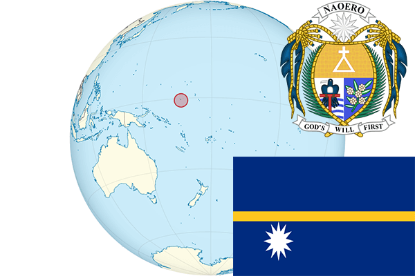

To`liq nomi: Nauru Respublikasi
Region: Tinch okeani
Qonunchilik shakli: Prezidentlik respublika
Mustaqillik kuni: 31 yanvar 1968 (Buyuk Britaniyadan)
Poytaxt: Yaren
Maydoni: 21 km2
Chegaradosh davlatlari: Yo’q
Aholisi: 10,084 (2011-yil)
Aholi zichligi: 480/km2
Aholining o`rtacha yoshi: -
Rasmiy tili: Naura tili
Dini: Xristian
Pul birligi: Avstralia dollari
Telefon prefiksi: +674
Internet domen: .nr
Xalqaro tashkilotlarga a`zoligi: -
Dengiz va okeanlarga chiqishi: Tinch okeani
YIM: Butun: $114 mil.(2017-yil) Jon boshiga: $8,570
Yirik shaharlari: Yaren